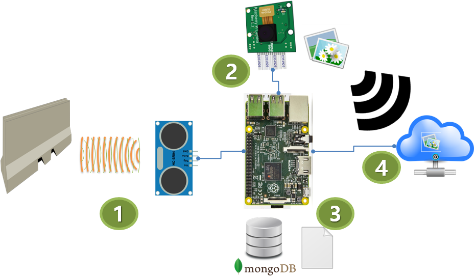
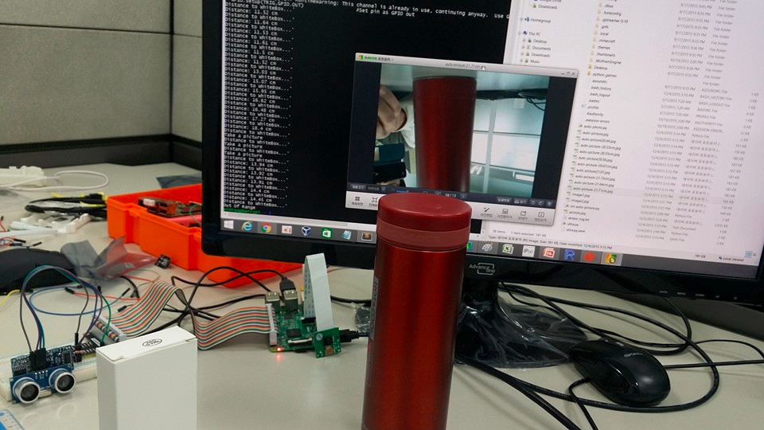

xwMOOC 컴퓨터
영상 정보 처리
학습 목표
- 라즈베리 파이 카메라를 설치한다.
1. IoT 제품 개발 툴체인(Tool-Chain)
IoT 제품을 개발하기 위해서 개발툴체인을 구축해야 한다.
준비물
- Fritzing: EDA(Electronic design automation) 설계 소프트웨어
2. IoT 자동 영상 촬영 시스템
일정 사정거리에 물체가 탐지되면 카메라로 영상을 찍어 클라우드로 보내서 이를 딥러닝 엔진을 사용해서 판독한 후에 사전에 작성한 정책에 따라 자동으로 작업을 처리하는 IoT 시스템을 구축한다.
IoT 자재명세서 (BOM,Bill-of-Material)
- 센서: 초음파센서(HC-SR04)
- 제어기: 라즈베리 파이 2
- 액츄에이터: 파이캠(Raspberry Pi Camera)
- 데이터베이스: 몽고DB
- 딥러닝 엔진: 구글 클라우드 시야 API(Google Cloud Vision API)1

2.1. 주변 상황 인식 (초음파센서, ADC)2
주변상황인식에 사용되는 다양한 센서는 기본적으로 아날로그 정보를 디지털 정보로 변환하는 역할을 한다. 초음파 센서를 라즈베리 파이에 GPIO를 사용해서 연결한다. 초음파 센서는 HC-SR04를 사용한다. HC-SR04 초음파센서는 작동범위에 한계가 있고 사물이 빗겨있거나 하면 초음파센서 자체의 한계로 인해 오차가 매우 커질 수 있으니 유의한다.
2.2. 제어 역할을 하는 두뇌 (라즈베리 파이, 디지털 정보 처리기계)
GIPI를 통해 라즈베리 파이 2에 들어온 센서정보는 사전에 작성한 파이썬 프로그램으로 작성된 알고리즘에 의해 두뇌와 같은 제어 역할을 수행하게 된다. 작성한 가상 시나리오는 10~20cm 이내에 사물이 인식되면 자동으로 파이캠으로 하여금 사진을 찍도록 한다. 그리고, 거리정보는 텍스트파일과 몽고DB에 저장하게 한다. 마지막으로 파이캠에서 찍은 사진 정보는 구글 클라우드 시야 API(Google Cloud Vision API)를 호출해서 사물을 인식하고, 인식된 사물에 따라 적절한 작업을 수행한다.
2.3. 행동으로 옮기는 액츄에이터 (파이카메라, DAC)3
액츄에이터는 기본적으로 디지털 정보를 다시 아날로그로 변환하는 역할을 하게된다. 제어 역할을 하는 두뇌 컴퓨터가 주변기기로 붙은 카메라에 사진을 찍도록 지시하여 행동에 옮기거나, 스피커를 통해 소리를 내보내거나, 램프를 깜빡이는 행위가 여기에 포함된다.
2.4. 로그로 빅데이터 만들기
센서를 통해서 다양한 정보를 단순히 제어를 위한 목적으로 처리할 수도 있지만, 시공간 정보를 데이터형태로 잘 저장하여 부가적인 가치를 만들어 내는 것도 빅데이터와 데이터과학이 만나 새로운 사업을 창출하고 인간의 삶을 한층더 높이는 역할을 하고 있다. 텍스트파일에 거리정보를 일정시간마다 저장하고, 파이카메라를 통해서 촬영된 사진정보를 시간도장(timestamp)을 찍어서 함께 쌓아두는 것도 가능하다. 라즈베리 파이가 담을 수 있는 정보는 한계가 있기 때문에 인터넷과 연결된 클라우드 저장소에 전송하여 저장하는 것이 필요하다.
2.5. 딥러닝 (구글 이미지 분석 API)
구글에서 최근 이미지 분석 API 공개를 했다. 텍스트 정보와 이미지 정보를 빅데이터 형태로 가지고 있다는 것만으로는 아무런 의미가 없다. 오히려 데이터 저장비용과 관리비용을 통해서 없는 편이 나을 수도 있다. 방대한 데이터를 실시간으로 분석하고 나서 이를 적절한 사업 시나리오에 맞춰서 사용할 수 있다는 것은 상당한 경쟁력이 된다.
3. IoT 파이썬 프로그램
파이썬 소스코드4 기반으로 센서 측정값을 파일에 적는 기능과 거리에 따라 일정한 거리에 위치하면 자동으로 파이캠을 작동해서 사진을 찍도록하는 기능을 추가했다.
import RPi.GPIO as GPIO #Import GPIO library
import time #Import time library
import picamera
camera = picamera.PiCamera()
GPIO.setmode(GPIO.BCM) #Set GPIO pin numbering
TRIG = 23 #Associate pin 23 to TRIG
ECHO = 24 #Associate pin 24 to ECHO
print "Distance measurement in progress"
GPIO.setup(TRIG,GPIO.OUT) #Set pin as GPIO out
GPIO.setup(ECHO,GPIO.IN) #Set pin as GPIO in
f = open('/home/pi/sensor_log.txt', 'a')
while True:
GPIO.output(TRIG, False) #Set TRIG as LOW
print "Distance to WhiteBox...'"
time.sleep(0.5) #Delay of 2 seconds
GPIO.output(TRIG, True) #Set TRIG as HIGH
time.sleep(0.00001) #Delay of 0.00001 seconds
GPIO.output(TRIG, False) #Set TRIG as LOW
while GPIO.input(ECHO)==0: #Check whether the ECHO is LOW
pulse_start = time.time() #Saves the last known time of LOW pulse
while GPIO.input(ECHO)==1: #Check whether the ECHO is HIGH
pulse_end = time.time() #Saves the last known time of HIGH pulse
pulse_duration = pulse_end - pulse_start #Get pulse duration to a variable
distance = pulse_duration * 17150 #Multiply pulse duration by 17150 to get distance
distance = round(distance, 2) #Round to two decimal points
f.write(str(distance)+'\n')
if distance > 5 and distance < 20: #Check whether the distance is within range
print "Distance:",distance - 0.5,"cm" #Print distance with 0.5 cm calibration
elif distance > 20 and distance <30:
print "Take a picture"
camera.capture('auto-picture-'+str(distance)+'cm.jpg')
else:
print "Out Of Range" #display out of range
exit()
f.close()
4. 라즈베리 파이 디렉토리(폴더) 공유하기
라즈베리 파이와 개발용 노트북/데스크톱 컴퓨터의 디렉토리(폴더)를 공유하면 작업하기 한결 수월하다. 설치에 대한 자세한 설명과 내용은 Raspberry Pi HQ 5 웹사이트를 참조한다.
4.1 라즈베리 파이 설정
먼저 라즈베리 파이에 로그인해서 삼바(Samba) 소프트웨어를 설치하고 환경설정을 한다. sudo apt-get install samba samba-common-bin명령어를 통해서 삼바를 설치한다. sudo nano /etc/samba/smb.conf 명령어를 통해 작업공유 그룹설정과 윈도우 지원을 활성화한다.
$ sudo apt-get install samba samba-common-bin
$ sudo nano /etc/samba/smb.confworkgroup = WORKGROUP
wins support = yes라즈베리 파이 홈 디렉토리 \home\pi 를 공유 폴더로 정하고, sudo nano /etc/samba/smb.conf 명령어로 공유 디렉토리를 지정한다.
$ mkdir ~/share
$ sudo nano /etc/samba/smb.conf[PiShare]
comment=Raspberry Pi Share
path=/home/pi
browseable=Yes
writeable=Yes
only guest=no
create mask=0777
directory mask=0777
public=nosudo smbpasswd -a pi 명령어를 통해서 윈도우에서 라즈베리 파이 공유폴더 접속할 때 인증을 위한 사용자와 비밀번호를 설정한다. 비밀번호는 임의로 가능하지만, raspberry로 일치하는 것도 좋다.
$ sudo smbpasswd -a pi4.2 윈도우즈 설정
윈도우즈 네트워크에서 라즈베리 파이 공유 디렉토리가 보이면 등록한 ID(pi)와 비밀번호(raspberry)를 사용해서 로그인한다.